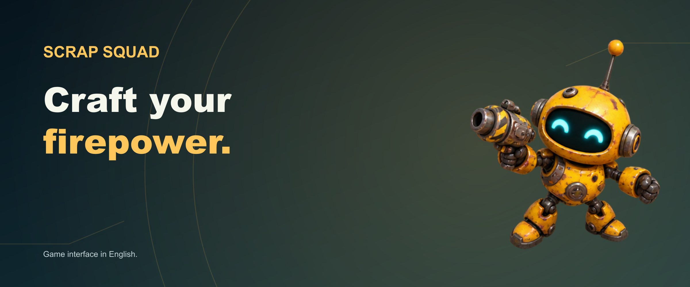

Scrap Squad: Merge & Survive
Build it. Merge it. Survive the swarm.
Assemble a robot squad, experiment with weapon fusion and take your inventions into battle. Discover blueprints, rebuild Scrap City and test new combinations against waves of machines.
Scrap Squad is currently being prepared for its first iOS and iPadOS release.
Support and feedback · Privacy Policy · Project